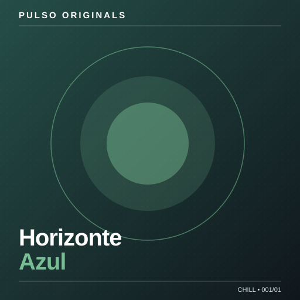

A trilha sonora
do seu momento.
Entre na rádio ou escolha a próxima música. Tudo em um só lugar, do seu jeito.
Rádio Radio Hits

Carregando...
Seleção Radio Hits
Na sequência
*Rádio simulada: a playlist acompanha o relógio, mas não é uma transmissão ao vivo com servidor. Pequenas diferenças de sincronismo podem ocorrer.
Explore no seu ritmo
Descubra seu próximo som.
Sem algoritmos escondidos. Você no controle de cada faixa.
Downloads
Verificando faixas disponíveis...
O pré-carregamento da rádio não salva músicas. Você pode baixar qualquer faixa da sua biblioteca para ouvir offline neste aparelho. Os arquivos usam espaço do dispositivo; use apenas músicas que você tem autorização para armazenar e distribuir.
Disponíveis para baixar
Toque em Baixar ao lado de qualquer música para salvá-la neste dispositivo. Os downloads não são enviados automaticamente para outro celular.
Escolha a sua vibe
Em destaque
Todas as faixas
Minhas músicas offline
Os áudios são salvos apenas quando você toca em Baixar. Use a lista acima para adicionar mais músicas e esta seção para ouvir ou excluir os arquivos baixados.
Seus favoritos.
Suas faixas preferidas ficam salvas neste navegador.
Minhas playlists.
Crie coleções e toque suas músicas na ordem que preferir.